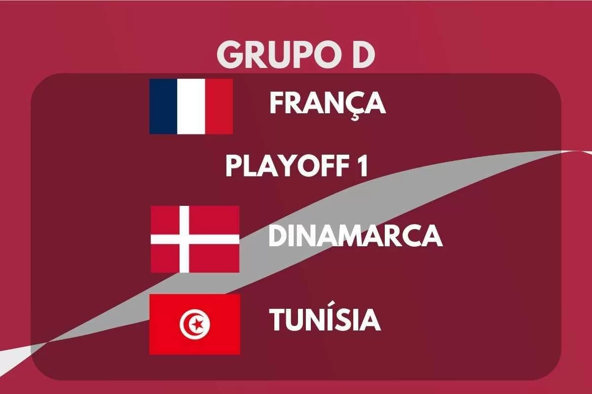

DESCRIÇÃO DO GRUPO
O Grupo D da Copa do Mundo FIFA 2022 terá sua primeira fase de jogos de 22 a 30 de novembro de 2022.
O grupo é formado pela França, os vencedores da AFC-CONMEBOL, Dinamarca e Tunísia.
As duas melhores equipes avançam para as oitavas de final.
|  |
Encontros anteriores em Copas do Mundo |
| França x AFC–CONMEBOL |
Adversário ainda não definido |
| Dinamarca x Tunísia |
Nenhum encontro |
| França x Dinamarca |
1998, fase de grupos:
França 2–1 Dinamarca
2002, fase de grupos:
Dinamarca 2–0 França
2018, fase de grupos:
Dinamarca 0-0 França |
| Tunísia x AFC–CONMEBOL |
Adversário ainda não definido |
| Tunísia x França |
Nenhum encontro |
| AFC–CONMEBOL x Dinamarca |
Adversário ainda não definido |
EQUIPES
| Equipe |
Inscrição |
Confederação |
Método de Qualificação |
Data de Qualificação |
Aparições em Copas do Mundo |
Última Participação |
Melhor Resultado |
Ranking FIFA (Março/2022) |
| França |
D1
(Cabeça-de-chave) |
UEFA |
Vencedor do grupo D |
13 de novembro de 2021 |
3 |
2018 |
Campeão (1998 e 2018) |
3º |
| Emirados Árabes Unidos, Austrália ou Peru |
D2 |
AFC ou CONMEBOL |
Vencedor da repescagem intercontinental |
13 de junho de 2022 |
- |
- |
- |
- |
| Dinamarca |
D3 |
UEFA |
Vencedor do grupo F |
12 de outubro de 2021 |
6 |
2018 |
Quartas de Final (1998) |
11º |
| Tunísia |
D4 |
CAF |
Vencedor do grupo E |
29 de março de 2022 |
6 |
2018 |
Fase de grupos (1978, 1998, 2002, 2006, 2018) |
35º |
PARTIDAS
Todas as partidas seguem o fuso horário UTC+3 (Horário de Moscow).
Dinamarca x Tunísia
| Data/Hora |
Local |
| 22 de Novembro às 16:00 |
Estádio da Cidade da Educação, Doha |
França x AFC–CONMEBOL
| Data/Hora |
Local |
| 22 de Novembro às 22:00 |
Estádio Al Janoub, Al-Wakrah |
Tunísia x AFC–CONMEBOL
| Data/Hora |
Local |
| 26 de Novembro às 13:00 |
Estádio Al Janoub, Al-Wakrah |
França x Dinamarca
| Data/Hora |
Local |
| 26 de Novembro às 19:00 |
Estádio 947 (Ras Abu Aboud), Doha |
AFC–CONMEBOL x Dinamarca
| Data/Hora |
Local |
| 30 de Novembro às 18:00 |
Estádio Al Janoub, Al-Wakrah |
Tunísia x França
| Data/Hora |
Local |
| 30 de Novembro às 22:00 |
Estádio da Cidade da Educação, Doha |
CLASSIFICAÇÃO
| 1º Colocado |
2º Colocado |
| Enfrenta o 2º Colocado do Grupo C, nas Oitavas de Final |
Enfrenta o 1º Colocado do Grupo C, nas Oitavas de Final |